Bajo la Mirada del Lienzo | Renacer
A veces, lo que pintamos… también nos pinta a nosotros.
Entramos juntos a mi habitación. Por un momento, me siento nervioso… como si ella pudiera ver más de lo que quiero mostrar.
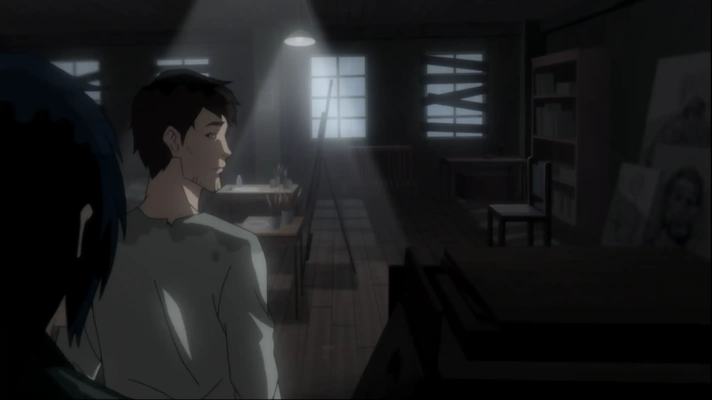Ella observa mis trabajos con cuidado y en silencio. Le pregunto qué le parecen.
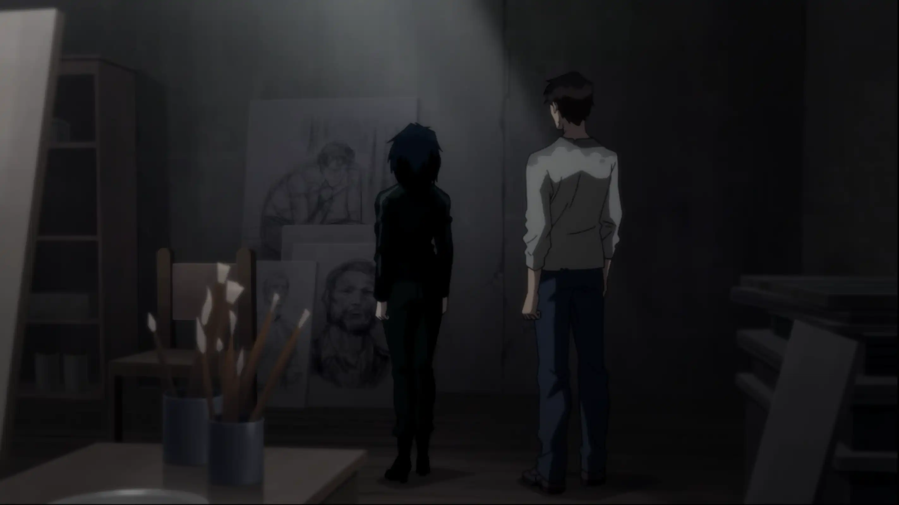Y justo ahí, aparecen otra vez. Mis demonios. Todos juntos, como si hubieran estado esperando este momento para recordarme que no soy suficiente.
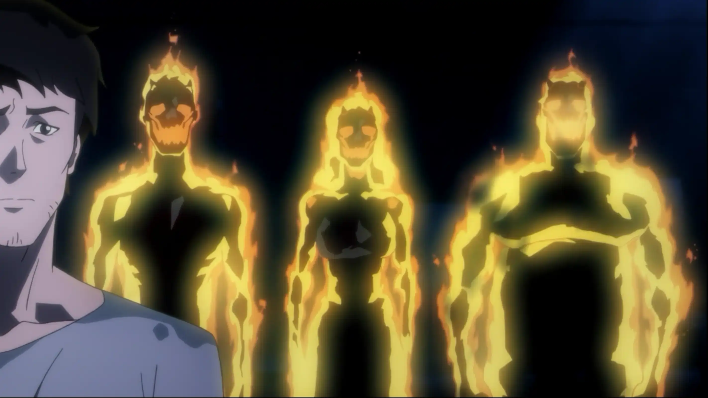Ella nota que los cuadros no están terminados. Me pregunta por qué, con una sinceridad que me desarma.
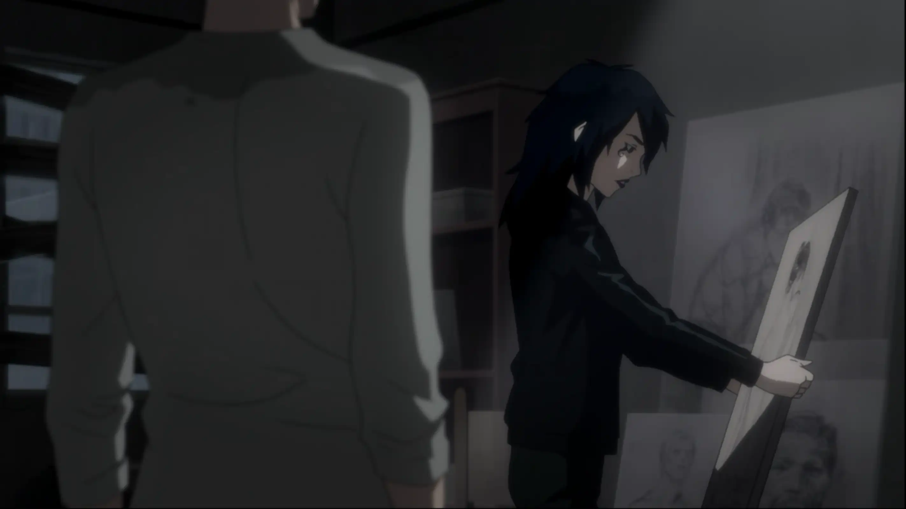Intento responder, pero mis demonios vuelven a hablarme, uno tras otro, criticando, burlándose, empujando mis dudas.
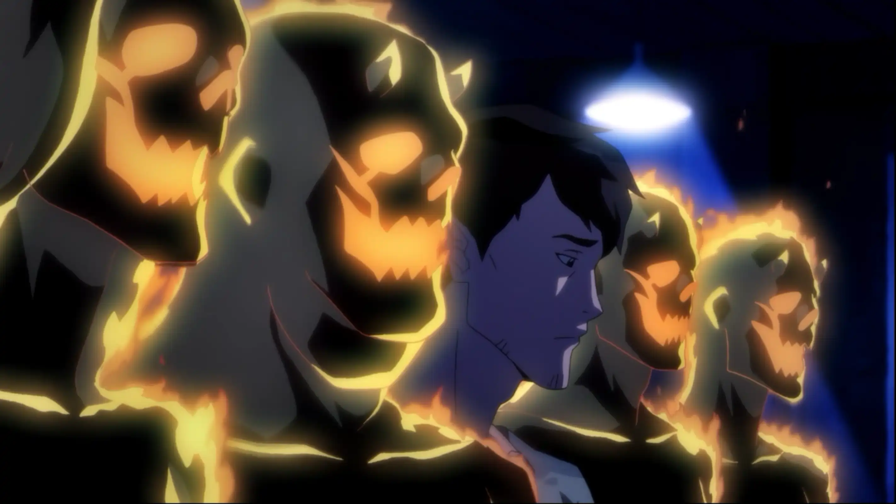Ella dice que tengo talento, pero que también nota que algo falta. Algo que tuve alguna vez… y que quizá perdí en el camino.
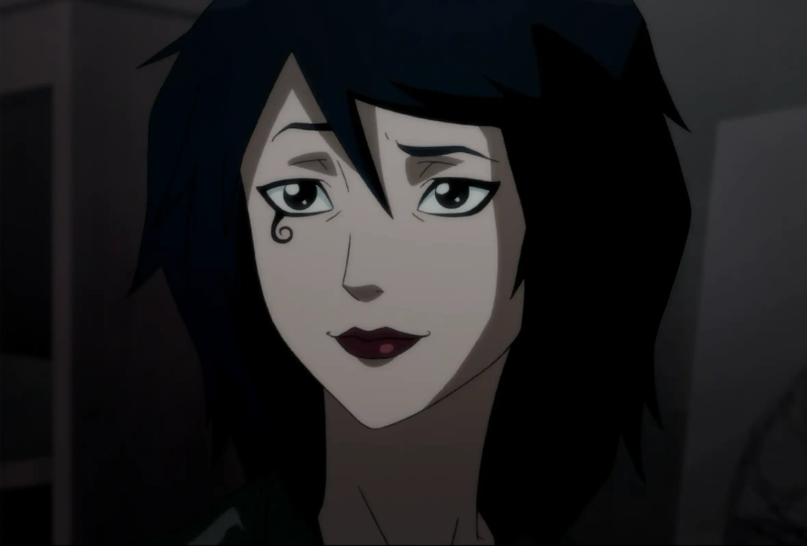Le cuento que de niño pasaba horas tirado en el piso, dibujando sin parar. Que en esos momentos el mundo se detenía, como si solo existiera el trazo. Ella sonríe… dice que eso suena a alegría pura. Gano algo de confianza y le intento aclarar que aquella noche en el bar no buscaba conquistarla. Solo estaba… roto, supongo.
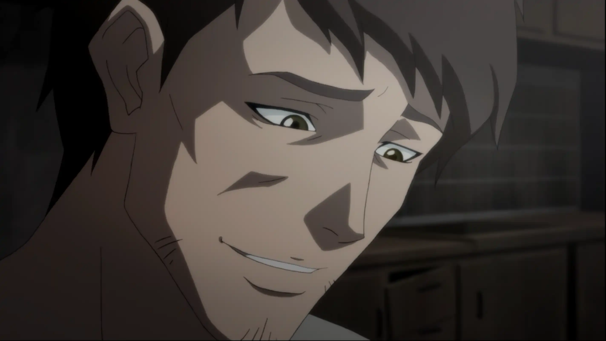Pero mis demonios no me dejan continuar. Otra vez aparecen, cortándome las palabras, intentando hacerme retroceder.
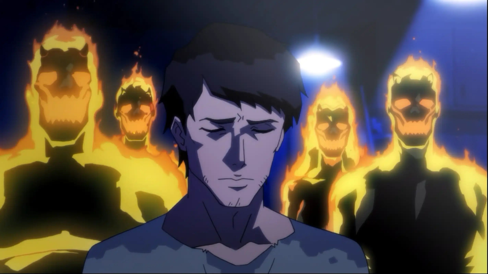Respiro hondo y sigo. Le digo que cuando la miro veo belleza, sí… pero también una tristeza profunda. Algo joven y antiguo al mismo tiempo. Le confieso que he esperado toda mi vida una oportunidad para pintar algo así.
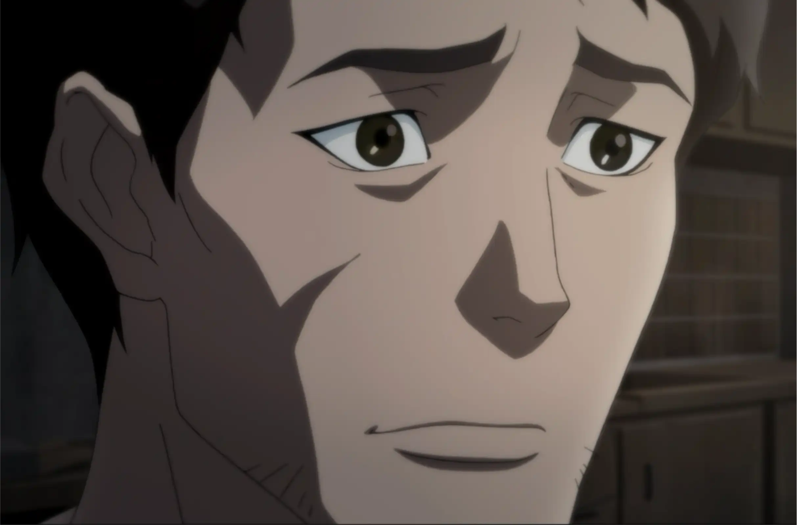Ella me mira en silencio… y acepta posar.
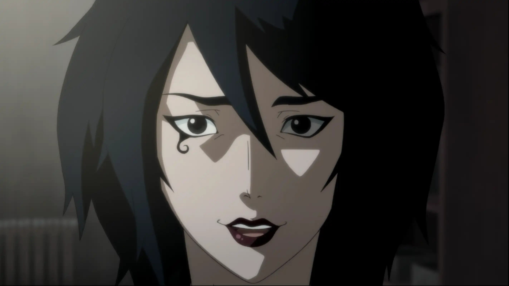Se quita la chaqueta y se sienta en una silla. La luz le cae suave encima, como si el cuarto hubiera estado esperándola.
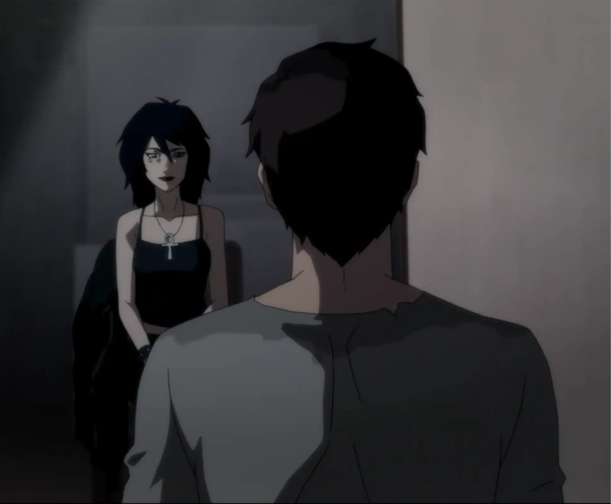Aunque mis demonios no callan, reúno el valor que me queda. Me acerco al lienzo y comienzo a pintarla.
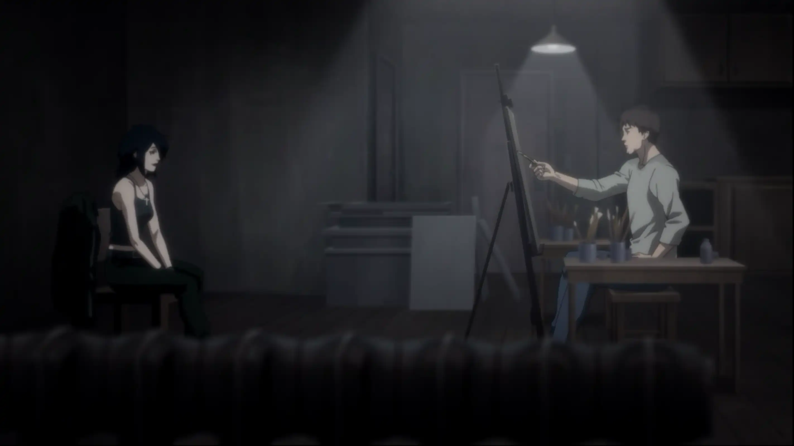Ellos insisten. Hablan más fuerte, más rápido, más cruel. Quieren que me detenga.

Pero no lo hago. A pesar de todo, continúo.
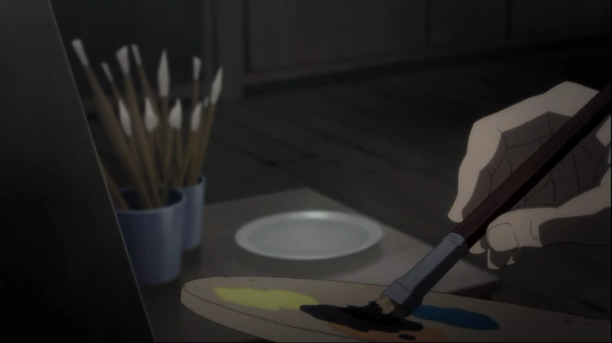Y mientras dibujo sin detenerme, uno a uno, mis demonios comienzan a desvanecerse… como si cada trazo los empujara un poco más lejos.
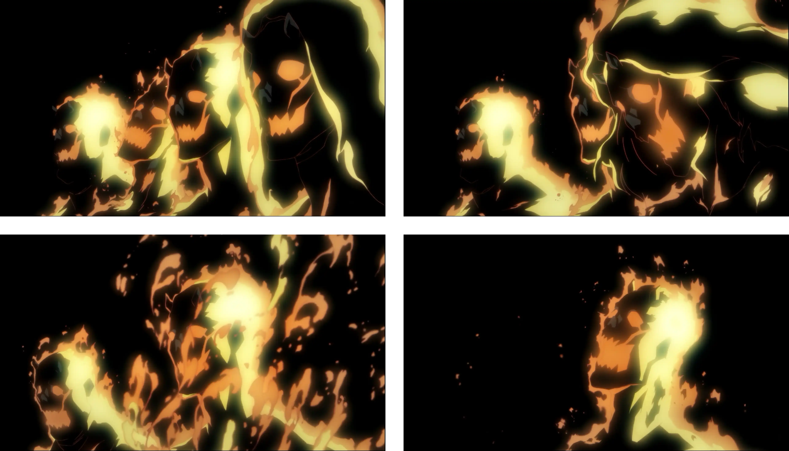